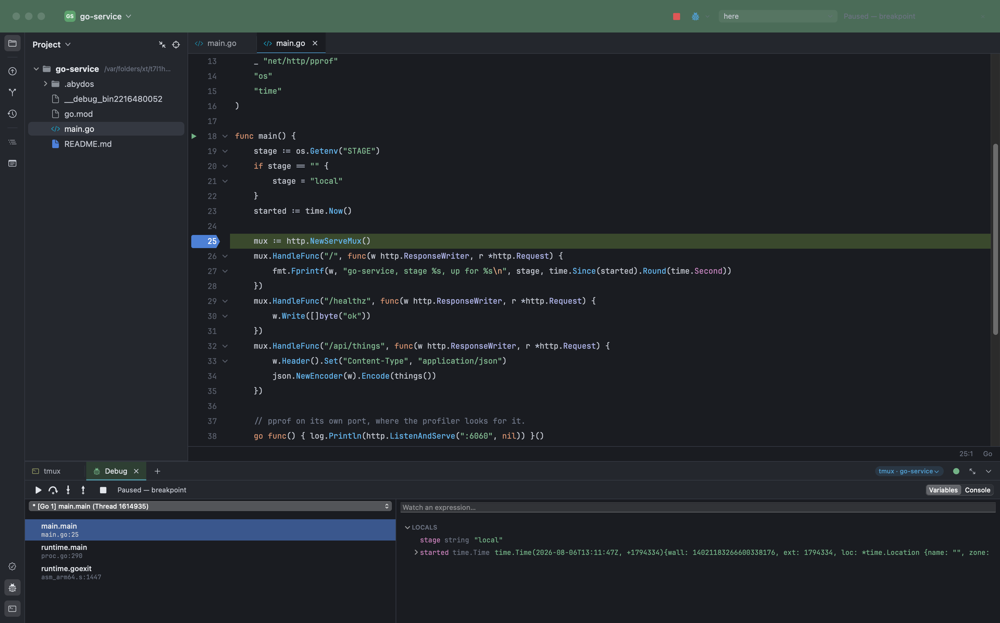
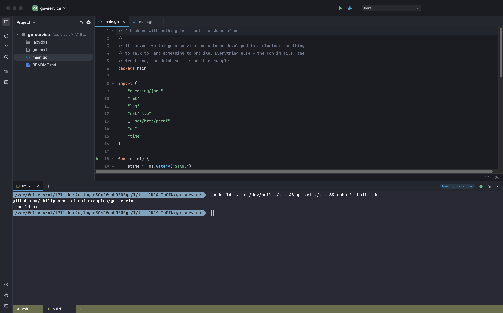
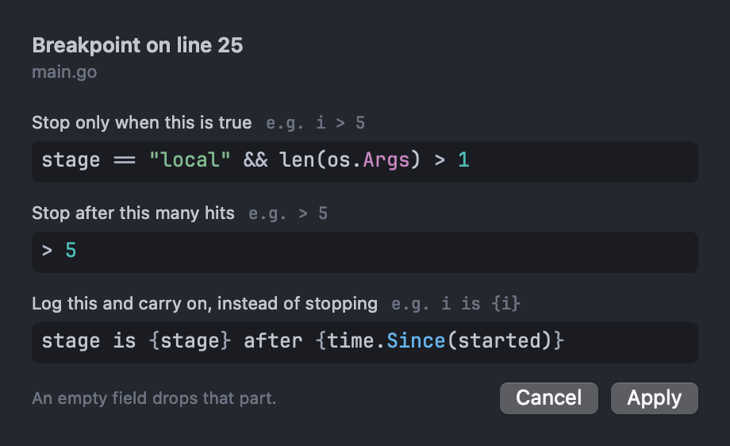
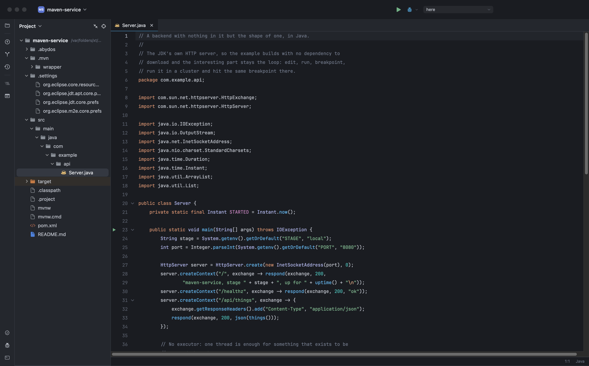

Abydos
A terminal-first IDE for AI and cloud development.
The terminal is not a strip at the bottom of an editor. It is where the work happens — shells, tmux windows, agents, a program running in a pod — and the editor, the debugger and the cluster arrange themselves around it. Native AppKit: no web view, no Electron, no subscription.
macOS 14 or newer, Apple silicon. Signed with a Developer ID and notarised.
The source is on invitation for now — both links need access, and will open to
everyone in time.

The two claims
Everything else here is an editor doing what editors do. These two are why it exists, and both are ordinary to use rather than a mode you enter.
Debug your program where it actually runs
A launch configuration with one extra key builds for the cluster's architecture, pushes the binary into a development pod and runs it there — about a second, against the minutes an image build and a rollout cost. The pod has the real chart's config, its secrets, its service account and its sidecars, so the program finds what production would give it.
Then press debug. It stops on your breakpoint in the pod, in your own sources, because the binary was compiled on this machine and its debug information names these files. A JVM is held suspended until you attach, so a worker cannot finish before you arrive.
Agents as sessions, not as a sidebar
An agent session is a PTY the app owns rather than something a view owns. It can be hidden, shown again, or handed over for manual takeover, and its process keeps running throughout.
Results come back over MCP as typed data — file, line, severity, detail — arriving as the work proceeds, so a click goes to the line. Scraping a rendered screen would break the first time the tool restyled its output; this is a contract instead.

tmux list-windows are the same list.And the rest of an IDE
Terminal
A real PTY with a VT100/xterm emulator: colour, mouse reporting, the alternate screen, kitty graphics, and a bundled Nerd Font. ⌘J opens one, ⌘⏎ gives it the whole window, and the panel's tabs can be tmux's windows.
Editor
tree-sitter highlighting and folding for 23 languages, a persistent rope behind the text, and a parser that is allowed to land a frame late so typing never waits for it.
Run and debug, here too
Launch configurations, Makefile goals, Maven goals, Gradle tasks and entry points found by scanning. Breakpoints — conditional, hit counts, log points — over DAP, with stack, variables and watches.
Navigator
Version-control colours, lazily-loaded directories, a warm tint on build
output, and full keyboard navigation. FSEvents keeps it live, so a
git checkout in a terminal recolours it.
Git
Status, changes, history, blame, branches, worktrees, stash and push, with the project badge and current branch on the traffic-light row.
Profiler
CPU, heap, goroutine, block and mutex profiles with a flame graph — pointed at a program here, or at a pod in the cluster through a forwarded port.
Swift apps, on the device in your hand
An Xcode project's schemes appear beside everything else that can be run, and a submenu says where: this Mac, a simulator, or a phone — over the cable or over Wi-Fi, whichever it is paired by. Where a scheme went last is remembered, so the play button repeats it.
It builds, installs, launches, and the app's own output arrives in the terminal. No Xcode window, and nothing to keep in step with one.

{…} in a log message is the part that gets
evaluated.Features
| Feature | What it does | What it needs |
|---|---|---|
| Navigator | project tree, version-control colours, keyboard-driven, FSEvents-live | — |
| Editor | tree-sitter highlighting, folding, word wrap, hex viewer, markdown preview | — |
| Search | find in file (⌘F), project-wide streaming search (⇧⌘F) | — |
| Outline | ⇧⌘O; symbols from the language server, or from a build file's own parser | a server, for source files |
| Language servers | completion, problems, hover, go-to-declaration, find-usages | the server for that language |
| Run | launch configurations, imported launch.json, Makefile goals, Maven goals, Gradle tasks, entry points | that language's toolchain |
| Debug | breakpoints, stack, variables, watches — over the Debug Adapter Protocol | Delve, LLDB, or jdtls's java-debug |
| Run in a cluster | build here, push into a development pod, run it there, follow its output | kubectl, a cluster |
| Debug in a cluster | the same pod, held at the first instruction until the debugger arrives | the above, and that language's pod image |
| Xcode schemes | run a scheme on this Mac, a simulator or a device, over USB or Wi-Fi; output in the terminal | Xcode |
| Breakpoint options | conditions, hit counts and log messages, written as code and coloured as code | — |
| Profiler | CPU, heap, goroutine, block and mutex profiles; flame graph; pods too | a Go program serving pprof |
| Git | status, changes, history, blame, branches, worktrees, stash, push | git |
| Terminal | real PTY, VT100/xterm, tmux windows as tabs | — |
| Agent review | ⇧⌘R — findings arrive over MCP as typed data | Claude Code |
Languages
Highlight and fold come from the grammar; outline is ⇧⌘O without a language server; server is what provides completion, problems and usages; cluster is running and debugging the same thing inside a development pod.
| Language | Highlight | Fold | Outline | Server | Run | Debug | Cluster |
|---|---|---|---|---|---|---|---|
| Java | ✓ | ✓ | ✓ | jdtls | Maven, Gradle, main | java-debug | ✓ |
| Kotlin | ✓ | ✓ | — | jdtls1 | Gradle, main | java-debug | ✓ |
| Go | ✓ | structural | ✓ | gopls | go run, make | Delve | ✓ |
| Swift | ✓ | ✓ | ✓ | sourcekit-lsp | make, launch config | LLDB | via make |
| Rust | ✓ | structural | ✓ | rust-analyzer | make, launch config | LLDB | ✓ |
| C / C++ | ✓ | structural | ✓ | clangd | make, launch config | LLDB | ✓ |
| Zig | ✓ | ✓ | — | — | make, launch config | LLDB | ✓ |
| Odin | ✓ | ✓ | — | — | make, launch config | LLDB | ✓ |
| Python | ✓ | structural | ✓ | pyright | make | — | — |
| TypeScript / TSX | ✓ | structural | ✓ | typescript-language-server | make | — | — |
| JavaScript | ✓ | structural | ✓ | typescript-language-server | make | — | — |
| Groovy | ✓ | ✓ | build files2 | — | Gradle | — | — |
| Makefile | as shell | structural | ✓ targets | — | every goal | Go goals | ✓ |
| JSON | ✓ | structural | — | vscode-json-language-server | — | — | — |
| Shell | ✓ | structural | — | — | make | — | — |
| HTML / XML | ✓ | structural | — | — | — | — | — |
| OpenSCAD | ✓ | structural | server | openscad-lsp | — | — | — |
| CSS, YAML, TOML, Markdown, Svelte | ✓ | structural | — | — | — | — | — |
1 jdtls answers for .java. A Kotlin file is highlighted
and folded but not served, and its main functions are still found,
run and debugged — the JVM does not care which language produced the class.
2 A pom.xml or Gradle build file has no server, and its
grammar knows nothing about modules — so ⇧⌘O over one is answered by
that build file's own parser: modules, plugins, dependencies, tasks.
"Structural" folding derives regions from any multi-line node in the parse tree,
so every language folds; a folds.scm only makes it tidier.
Nothing is bundled. A language server, a debugger and a build tool each have opinions about your toolchain, and the ones already on your machine are the right ones — so what is missing is named in a bar at the top of the editor, with the one command that installs it.

Java, in full
The most recent language to be supported end to end, and the one that shows what "supported" means here:
The language server
brew install jdtls. Each project gets an index of its own,
and the JDKs installed on the machine are reported to it, so a module
targeting 17 compiles against 17.
Maven and Gradle
Read directly — modules, plugins, dependencies, tasks — so their goals
are run configurations and ⇧⌘O works over a build file. The
wrapper wins over anything on the PATH.
Debugging
java-debug is not a program but a bundle the language server loads: jdtls is asked for a debug session, answers with a port, and the classpath comes from the same server, because nothing else knows it.
In a cluster
A jar is built here and pushed into a pod that has a JVM. Debugging starts that JVM suspended with JDWP open, so the attach lands before the program has done anything — which is the only way to debug a worker.
Performance
Measured on Apple silicon, release build:
| Operation | File | Time |
|---|---|---|
| Build rope | 7 MB / 200k lines | 11 ms |
| Keystroke (main thread) | 3.5 MB / 100k lines | 0.013 ms |
| Highlight one viewport (80 lines) | 3.5 MB / 100k lines | 2.5 ms |
| 10k random line lookups | 200k lines | 8 ms |
| Edit cost growth over a 200× larger file | — | 2.8× |
Three decisions do most of that: a persistent rope whose interior nodes sum bytes, UTF-16 units and newlines; highlighting scoped to the bytes on screen; and a parser that runs off the main thread and is allowed to land a frame late. The rope is authoritative for text, the parser only for colour.
Building it yourself
# Xcode's Swift, not whichever one is first on the PATH. git clone https://github.com/philipparndt/ideai.git cd Abydos make # build the .app and launch it make test # the suite make dev # debug build, in the foreground, logs on the terminal